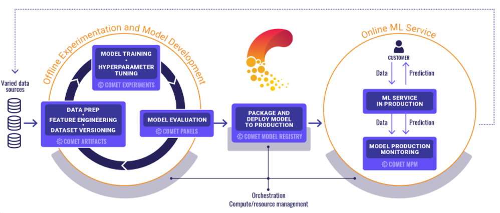

<!DOCTYPE html>
<html lang="en">
  <head>
    <meta charset="utf-8" />
    <meta name="viewport" content="width=device-width, initial-scale=1.0, maximum-scale=1.0, user-scalable=no" />

    <title>ML Ops</title>
    <link rel="stylesheet" href="dist/reveal.css" />
    <link rel="stylesheet" href="dist/theme/black.css" id="theme" />
    <link rel="stylesheet" href="plugin/highlight/monokai.css" />
	<link rel="stylesheet" href="css/layout.css" />
	<link rel="stylesheet" href="plugin/customcontrols/style.css">
	<link rel="stylesheet" href="plugin/chalkboard/style.css">

    <link rel="stylesheet" href="./css/custom.css" />

    <script defer src="dist/fontawesome/all.min.js"></script>

	<script type="text/javascript">
		var forgetPop = true;
		function onPopState(event) {
			if(forgetPop){
				forgetPop = false;
			} else {
				parent.postMessage(event.target.location.href, "app://obsidian.md");
			}
        }
		window.onpopstate = onPopState;
		window.onmessage = event => {
			if(event.data == "reload"){
				window.document.location.reload();
			}
			forgetPop = true;
		}

		function fitElements(){
			const itemsToFit = document.getElementsByClassName('fitText');
			for (const item in itemsToFit) {
				if (Object.hasOwnProperty.call(itemsToFit, item)) {
					var element = itemsToFit[item];
					fitElement(element,1, 1000);
					element.classList.remove('fitText');
				}
			}
		}

		function fitElement(element, start, end){

			let size = (end + start) / 2;
			element.style.fontSize = `${size}px`;

			if(Math.abs(start - end) < 1){
				while(element.scrollHeight > element.offsetHeight){
					size--;
					element.style.fontSize = `${size}px`;
				}
				return;
			}

			if(element.scrollHeight > element.offsetHeight){
				fitElement(element, start, size);
			} else {
				fitElement(element, size, end);
			}		
		}


		document.onreadystatechange = () => {
			fitElements();
			if (document.readyState === 'complete') {
				if (window.location.href.indexOf("?export") != -1){
					parent.postMessage(event.target.location.href, "app://obsidian.md");
				}
				if (window.location.href.indexOf("print-pdf") != -1){
					let stateCheck = setInterval(() => {
						clearInterval(stateCheck);
						window.print();
					}, 250);
				}
			}
	};


        </script>
  </head>
  <body>
    <div class="reveal">
      <div class="slides"><section  data-markdown><script type="text/template">

<div class="reset-margin" style="font-family: 'Inter',sans-serif; background-color: #303030; border-radius: 8px!important; padding: auto; align: center; position: absolute; left: 48px; top: 140px; height: 175px; min-height: 175px; width: 864px; display: flex; flex-direction: column; align-items: center; justify-content: space-evenly" >

# ML Ops Examples <!-- .element: style="font-family: 'Inter'; color: #F8F8F8" -->
    
#### <i class="fab fa-github"></i> [`saforem2/mlops`](https://www.github.com/saforem2/mlops)
</div>

<div class="reset-margin" style="line-height: 0.6em; position: absolute; left: 0px; top: 385px; height: 210px; min-height: 210px; width: 960px; display: flex; flex-direction: column; align-items: center; justify-content: flex-start" >

Sam Foreman <!-- .element: style="font-family: 'Inter'; font-size: 1.6em; font-weight: 500; line-height: 0.6; color: #E0E0E0!important; vertical-align: bottom!important" -->

May, 2022 <!-- .element: style="font-family: 'Nanum Pen Script'; font-size: 1.8em; color: #616161; vertical-align: top; font-weight: 400" -->
</div>

<div class="reset-margin flex-even" style="font-size: 1.5em; position: absolute; left: 0px; top: 630px; height: 70px; min-height: 70px; width: 960px; display: flex; flex-direction: row; align-items: center; justify-content: space-evenly" align="left">


<div class="block">

<!-- .element: style="margin-left: 2%; margin-bottom: 2%" -->

[<i class="fab fa-github"></i>](https://github.com/saforem2)
[<i class="fas fa-home"></i>](https://samforeman.me)
[<i class="fab fa-twitter"></i>](https://twitter.com/saforem2)

</div>


</div>

<div class="reset-margin" style="position: absolute; left: 672px; top: 490px; height: 210px; min-height: 210px; width: 288px; display: flex; flex-direction: column; align-items: flex-end; justify-content: flex-end" align="right">

</img>
</div>

<!-- .slide: class="drop" -->
</script></section><section  data-markdown><script type="text/template">
<div class="reset-margin" style="margin-top: 10%; position: absolute; left: 240px; top: 0px; height: 140px; min-height: 140px; width: 480px; display: flex; flex-direction: column; align-items: center; justify-content: space-evenly" >

 # 📊 ML Ops
</div>

<div class="note has-light-background reset-margin" style="text-align: left; background-color: #66bb6a; position: absolute; left: 192px; top: 262.5px; height: 175px; min-height: 175px; width: 576px; display: flex; flex-direction: column; align-items: center; justify-content: space-evenly" >


**Goal**: Allow researchers to focus on their science / model development without all the boilerplate.

</div>

<!-- .slide: class="drop" -->
</script></section><section  data-markdown><script type="text/template">
<!-- .slide: class="has-light-background drop" data-background-color="white" -->

### MLOps

<div class="reset-margin" style="position: absolute; left: 0px; top: 56px; height: 644px; min-height: 644px; width: 960px; display: flex; flex-direction: column; align-items: center; justify-content: space-evenly" >


<iframe id="mlops" width="100%" height="100%" data-src="https://www.mlops.toys" data-preload data-background-interactive></iframe>

</div>
</script></section><section  data-markdown><script type="text/template">

<div class="reset-margin" style="position: absolute; left: 288px; top: 0px; height: 280px; min-height: 280px; width: 384px; display: flex; flex-direction: column; align-items: center; justify-content: space-evenly" >

[](https://comet.ml)
</div>

<div class="reset-margin" style="position: absolute; left: 0px; top: 175px; height: 350px; min-height: 350px; width: 960px; display: flex; flex-direction: column; align-items: center; justify-content: space-evenly" >


```python
# For Comet to start tracking a training run,
# just add these two lines at the top of your training script:
import comet_ml

experiment = comet_ml.Experiment(
    api_key="API_KEY",
    project_name="PROJECT_NAME"
)
# Metrics from this training run will now be visible in the Comet UI
```
</div>

<!-- .slide: class="drop" -->
</script></section><section  data-markdown><script type="text/template">

# Why Comet?

<div class="block">

<!-- .element: style="font-size: 0.8em" align="center" -->

<div class="block">

<!-- .element: style="font-size: 0.8em" class="blockquote-wrapper" align="center" --> 

> While some ML platform vendors offer stand-alone experiment tracking or model production monitoring systems, Comet offers both.
> <br><span style="text-align:right!important;">&mdash; [comet.ml](https://comet.ml) </span>

</div>


- Features:
    - Experiment tracking and management
    - Dataset versioning
    - Model registry
    - Model production monitoring
    - Code panels
    - Reports

</div>


</script></section><section  data-markdown><script type="text/template">
<!-- .slide: class="has-light-background" data-background-color="white" -->

# Comet

<p style="line-height: 0" class="reset-paragraph image-paragraph"></img></p>

</script></section><section  data-markdown><script type="text/template">
#  Comet  + `TensorFlow`

- <i class="fab fa-github"></i> [`mlops/comet/tensorflow/main.py`](https:/www.github.com/saforem2/mlops/comet/tensorflow/main.py)
- [dashboard](https://www.comet.ml/saforem2/mlops/2cc1b07491554afcb42af1c7f040353e?experiment-tab=chart&showOutliers=true&smoothing=0&transformY=smoothing&xAxis=step)
</script></section><section  data-markdown><script type="text/template">


<section data-background-iframe="https://www.comet.ml/saforem2/mlops/2cc1b07491554afcb42af1c7f040353e?experiment-tab=chart&showOutliers=true&smoothing=0&transformY=smoothing&xAxis=step" data-background-interactive></section>

<aside class="notes"><ul>
<li>Background iframe</li>
</ul>
</aside></script></section><section  data-markdown><script type="text/template">
<!-- .slide: class="has-light-background drop" data-background-color="white" -->
<div class="reset-margin" style="position: absolute; left: 0px; top: 0px; height: 700px; min-height: 700px; width: 960px; display: flex; flex-direction: column; align-items: center; justify-content: space-evenly" >

<iframe width="100%" height="100%" data-src="https://www.comet.ml/saforem2/mlops/2cc1b07491554afcb42af1c7f040353e?experiment-tab=chart&showOutliers=true&smoothing=0&transformY=smoothing&xAxis=step" style="border:none;width:100%" data-preload data-background-interactive></iframe>
</div>
</script></section><section  data-markdown><script type="text/template"><!-- .slide: class="has-light-background drop" data-background-color="white" -->
<div class="reset-margin" style="position: absolute; left: 0px; top: 0px; height: 700px; min-height: 700px; width: 960px; display: flex; flex-direction: column; align-items: center; justify-content: space-evenly" >

<iframe width="100%" height="100%" data-src="https://wandb.ai/l2hmc-qcd/l2hmc-qcd/reports/L2HMC-Report-04-04-2022---VmlldzoxNzgzODcx" style="border:none;width:100%" data-preload data-background-interactive></iframe>
</div>
</script></section><section  data-markdown><script type="text/template">
<style>
:root {
   --r-heading-font: 'Inter', sans-serif;
  font-size: 34px;
}
.horizontal_dotted_line{
  border-bottom: 2px dotted gray;
} 
.footer {
  font-size: 60%;
  vertical-align:bottom;
  color:#bdbdbd;
  font-weight:400;
  margin-left:-5px;
  margin-bottom:1%;
}
.note {
  padding:auto;
  margin: auto;
  text-align:center!important;
  border-radius: 8px!important;
  background-color: rgba(53, 53, 53, 0.5);
}
.reveal ul ul,
.reveal ul ol,
.reveal ol ol,
.reveal ol ul {
  margin-bottom: 10px;
}
.callout {
  background-color: #35353550
  color: #eeeeee;
}
.callout-content {
  overflow-x: auto;
  color: #eeeeee;
  background-color:#353535;
  padding: 5px 15px;
}
</style></script></section></div>
    </div>

    <script src="dist/reveal.js"></script>

    <script src="plugin/markdown/markdown.js"></script>
    <script src="plugin/highlight/highlight.js"></script>
    <script src="plugin/zoom/zoom.js"></script>
    <script src="plugin/notes/notes.js"></script>
    <script src="plugin/math/math.js"></script>
	<script src="plugin/mermaid/mermaid.js"></script>
	<script src="plugin/chart/chart.min.js"></script>
	<script src="plugin/chart/plugin.js"></script>
	<script src="plugin/menu/menu.js"></script>
	<script src="plugin/customcontrols/plugin.js"></script>
	<script src="plugin/chalkboard/plugin.js"></script>

    <script>
      function extend() {
        var target = {};
        for (var i = 0; i < arguments.length; i++) {
          var source = arguments[i];
          for (var key in source) {
            if (source.hasOwnProperty(key)) {
              target[key] = source[key];
            }
          }
        }
        return target;
      }

	  function isLight(color) {
		let hex = color.replace('#', '');

		// convert #fff => #ffffff
		if(hex.length == 3){
			hex = `${hex[0]}${hex[0]}${hex[1]}${hex[1]}${hex[2]}${hex[2]}`;
		}

		const c_r = parseInt(hex.substr(0, 2), 16);
		const c_g = parseInt(hex.substr(2, 2), 16);
		const c_b = parseInt(hex.substr(4, 2), 16);
		const brightness = ((c_r * 299) + (c_g * 587) + (c_b * 114)) / 1000;
		return brightness > 155;
	}

	var bgColor = getComputedStyle(document.documentElement).getPropertyValue('--r-background-color').trim();

	if(isLight(bgColor)){
		document.body.classList.add('has-light-background');
	} else {
		document.body.classList.add('has-dark-background');
	}

      // default options to init reveal.js
      var defaultOptions = {
        controls: true,
        progress: true,
        history: true,
        center: true,
        transition: 'default', // none/fade/slide/convex/concave/zoom
        plugins: [
          RevealMarkdown,
          RevealHighlight,
          RevealZoom,
          RevealNotes,
          RevealMath.MathJax3,
		  RevealMermaid,
		  RevealChart,
		  RevealCustomControls,
		  RevealMenu,
		  RevealChalkboard, 
        ],

		mathjax3: {
			mathjax: 'plugin/math/mathjax/tex-mml-chtml.js',
		},

		customcontrols: {
			controls: [
				{id: 'toggle-overview',
				title: 'Toggle overview (O)',
				icon: '<i class="fa fa-th"></i>',
				action: 'Reveal.toggleOverview();'
				},
				{ icon: '<i class="fa fa-pen-square"></i>',
				title: 'Toggle chalkboard (B)',
				action: 'RevealChalkboard.toggleChalkboard();'
				},
				{ icon: '<i class="fa fa-pen"></i>',
				title: 'Toggle notes canvas (C)',
				action: 'RevealChalkboard.toggleNotesCanvas();'
				},
			]
		},
		menu: {
			loadIcons: false
		}
      };

      // options from URL query string
      var queryOptions = Reveal().getQueryHash() || {};

      var options = extend(defaultOptions, {"width":960,"height":700,"margin":0.04,"controls":true,"progress":true,"slideNumber":true,"center":true,"transition":"slide","transitionSpeed":"fast"}, queryOptions);
    </script>

    <script>
      Reveal.initialize(options);
    </script>
  </body>
</html>
